Android内存泄漏总结
Android 内存泄漏总结
内存管理的目的就是让我们在开发中怎么有效的避免我们的应用出现内存泄漏的问题。内存泄漏大家都不陌生了，简单粗俗的讲，就是该被释放的对象没有释放，一直被某个或某些实例所持有却不再被使用导致 GC 不能回收。最近自己阅读了大量相关的文档资料，打算做个 总结 沉淀下来跟大家一起分享和学习，也给自己一个警示，以后 coding 时怎么避免这些情况，提高应用的体验和质量。
我会从 java 内存泄漏的基础知识开始，并通过具体例子来说明 Android 引起内存泄漏的各种原因，以及如何利用工具来分析应用内存泄漏，最后再做总结。
篇幅有些长，大家可以分几节来看！
Java 内存分配策略
Java 程序运行时的内存分配策略有三种,分别是静态分配,栈式分配,和堆式分配，对应的，三种存储策略使用的内存空间主要分别是静态存储区（也称方法区）、栈区和堆区。
- 静态存储区（方法区）：主要存放静态数据、全局 static 数据和常量。这块内存在程序编译时就已经分配好，并且在程序整个运行期间都存在。
- 栈区 ：当方法被执行时，方法体内的局部变量都在栈上创建，并在方法执行结束时这些局部变量所持有的内存将会自动被释放。因为栈内存分配运算内置于处理器的指令集中，效率很高，但是分配的内存容量有限。
- 堆区 ： 又称动态内存分配，通常就是指在程序运行时直接 new 出来的内存。这部分内存在不使用时将会由 Java 垃圾回收器来负责回收。
栈与堆的区别
在方法体内定义的（局部变量）一些基本类型的变量和对象的引用变量都是在方法的栈内存中分配的。当在一段方法块中定义一个变量时，Java 就会在栈中为该变量分配内存空间，当超过该变量的作用域后，该变量也就无效了，分配给它的内存空间也将被释放掉，该内存空间可以被重新使用。
堆内存用来存放所有由 new 创建的对象（包括该对象其中的所有成员变量）和数组。在堆中分配的内存，将由 Java 垃圾回收器来自动管理。在堆中产生了一个数组或者对象后，还可以在栈中定义一个特殊的变量，这个变量的取值等于数组或者对象在堆内存中的首地址，这个特殊的变量就是我们上面说的引用变量。我们可以通过这个引用变量来访问堆中的对象或者数组。
举个例子:
public class Sample() {
int s1 = 0;
Sample mSample1 = new Sample();
public void method() {
int s2 = 1;
Sample mSample2 = new Sample();
}
}
Sample mSample3 = new Sample();
Sample 类的局部变量 s2 和引用变量 mSample2 都是存在于栈中，但 mSample2 指向的对象是存在于堆上的。
mSample3 指向的对象实体存放在堆上，包括这个对象的所有成员变量 s1 和 mSample1，而它自己存在于栈中。
结论
- 局部变量的基本数据类型和引用存储于栈中，引用的对象实体存储于堆中。—— 因为它们属于方法中的变量，生命周期随方法而结束。
- 成员变量全部存储与堆中（包括基本数据类型，引用和引用的对象实体）—— 因为它们属于类，类对象终究是要被new出来使用的。
了解了 Java 的内存分配之后，我们再来看看 Java 是怎么管理内存的。
Java是如何管理内存
Java的内存管理就是对象的分配和释放问题。在 Java 中，程序员需要通过关键字 new 为每个对象申请内存空间 (基本类型除外)，所有的对象都在堆 (Heap)中分配空间。另外，对象的释放是由 GC 决定和执行的。在 Java 中，内存的分配是由程序完成的，而内存的释放是由 GC 完成的，这种收支两条线的方法确实简化了程序员的工作。但同时，它也加重了JVM的工作。这也是 Java 程序运行速度较慢的原因之一。因为，GC 为了能够正确释放对象，GC 必须监控每一个对象的运行状态，包括对象的申请、引用、被引用、赋值等，GC 都需要进行监控。
监视对象状态是为了更加准确地、及时地释放对象，而释放对象的根本原则就是该对象不再被引用。
为了更好理解 GC 的工作原理，我们可以将对象考虑为有向图的顶点，将引用关系考虑为图的有向边，有向边从引用者指向被引对象。另外，每个线程对象可以作为一个图的起始顶点，例如大多程序从 main 进程开始执行，那么该图就是以 main 进程顶点开始的一棵根树。在这个有向图中，根顶点可达的对象都是有效对象，GC将不回收这些对象。如果某个对象 (连通子图)与这个根顶点不可达(注意，该图为有向图)，那么我们认为这个(这些)对象不再被引用，可以被 GC 回收。
以下，我们举一个例子说明如何用有向图表示内存管理。对于程序的每一个时刻，我们都有一个有向图表示JVM的内存分配情况。以下右图，就是左边程序运行到第6行的示意图。
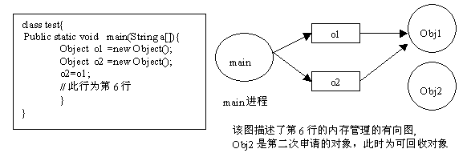
Java使用有向图的方式进行内存管理，可以消除引用循环的问题，例如有三个对象，相互引用，只要它们和根进程不可达的，那么GC也是可以回收它们的。这种方式的优点是管理内存的精度很高，但是效率较低。另外一种常用的内存管理技术是使用计数器，例如COM模型采用计数器方式管理构件，它与有向图相比，精度行低(很难处理循环引用的问题)，但执行效率很高。
什么是Java中的内存泄露
在Java中，内存泄漏就是存在一些被分配的对象，这些对象有下面两个特点，首先，这些对象是可达的，即在有向图中，存在通路可以与其相连；其次，这些对象是无用的，即程序以后不会再使用这些对象。如果对象满足这两个条件，这些对象就可以判定为Java中的内存泄漏，这些对象不会被GC所回收，然而它却占用内存。
在C++中，内存泄漏的范围更大一些。有些对象被分配了内存空间，然后却不可达，由于C++中没有GC，这些内存将永远收不回来。在Java中，这些不可达的对象都由GC负责回收，因此程序员不需要考虑这部分的内存泄露。
通过分析，我们得知，对于C++，程序员需要自己管理边和顶点，而对于Java程序员只需要管理边就可以了(不需要管理顶点的释放)。通过这种方式，Java提高了编程的效率。

因此，通过以上分析，我们知道在Java中也有内存泄漏，但范围比C++要小一些。因为Java从语言上保证，任何对象都是可达的，所有的不可达对象都由GC管理。
对于程序员来说，GC基本是透明的，不可见的。虽然，我们只有几个函数可以访问GC，例如运行GC的函数System.gc()，但是根据Java语言规范定义， 该函数不保证JVM的垃圾收集器一定会执行。因为，不同的JVM实现者可能使用不同的算法管理GC。通常，GC的线程的优先级别较低。JVM调用GC的策略也有很多种，有的是内存使用到达一定程度时，GC才开始工作，也有定时执行的，有的是平缓执行GC，有的是中断式执行GC。但通常来说，我们不需要关心这些。除非在一些特定的场合，GC的执行影响应用程序的性能，例如对于基于Web的实时系统，如网络游戏等，用户不希望GC突然中断应用程序执行而进行垃圾回收，那么我们需要调整GC的参数，让GC能够通过平缓的方式释放内存，例如将垃圾回收分解为一系列的小步骤执行，Sun提供的HotSpot JVM就支持这一特性。
同样给出一个 Java 内存泄漏的典型例子，
Vector v = new Vector(10);
for (int i = 1; i < 100; i++) {
Object o = new Object();
v.add(o);
o = null;
}
在这个例子中，我们循环申请Object对象，并将所申请的对象放入一个 Vector 中，如果我们仅仅释放引用本身，那么 Vector 仍然引用该对象，所以这个对象对 GC 来说是不可回收的。因此，如果对象加入到Vector 后，还必须从 Vector 中删除，最简单的方法就是将 Vector 对象设置为 null。
Android中常见的内存泄漏汇总
- 集合类泄漏
集合类如果仅仅有添加元素的方法，而没有相应的删除机制，导致内存被占用。如果这个集合类是全局性的变量 (比如类中的静态属性，全局性的 map 等即有静态引用或 final 一直指向它)，那么没有相应的删除机制，很可能导致集合所占用的内存只增不减。比如上面的典型例子就是其中一种情况，当然实际上我们在项目中肯定不会写这么 2B 的代码，但稍不注意还是很容易出现这种情况，比如我们都喜欢通过 HashMap 做一些缓存之类的事，这种情况就要多留一些心眼。
- 单例造成的内存泄漏
由于单例的静态特性使得其生命周期跟应用的生命周期一样长，所以如果使用不恰当的话，很容易造成内存泄漏。比如下面一个典型的例子，
public class AppManager {
private static AppManager instance;
private Context context;
private AppManager(Context context) {
this.context = context;
}
public static AppManager getInstance(Context context) {
if (instance == null) {
instance = new AppManager(context);
}
return instance;
}
}
这是一个普通的单例模式，当创建这个单例的时候，由于需要传入一个Context，所以这个Context的生命周期的长短至关重要：
- 1、如果此时传入的是 Application 的 Context，因为 Application 的生命周期就是整个应用的生命周期，所以这将没有任何问题。
- 2、如果此时传入的是 Activity 的 Context，当这个 Context 所对应的 Activity 退出时，由于该 Context 的引用被单例对象所持有，其生命周期等于整个应用程序的生命周期，所以当前 Activity 退出时它的内存并不会被回收，这就造成泄漏了。
正确的方式应该改为下面这种方式：
public class AppManager {
private static AppManager instance;
private Context context;
private AppManager(Context context) {
this.context = context.getApplicationContext();// 使用Application 的context
}
public static AppManager getInstance(Context context) {
if (instance == null) {
instance = new AppManager(context);
}
return instance;
}
}
或者这样写，连 Context 都不用传进来了：
在你的Application中添加一个静态方法，getContext()返回Application的 context，
...
context = getApplicationContext();
...
/**
* 获取全局的context
* @return 返回全局context对象
*/
public static Context getContext(){
return context;
}
public class AppManager {
private static AppManager instance;
private Context context;
private AppManager() {
this.context = MyApplication.getContext();// 使用Application 的context
}
public static AppManager getInstance() {
if (instance == null) {
instance = new AppManager();
}
return instance;
}
}
- 匿名内部类/非静态内部类和异步线程
1、非静态内部类创建静态实例造成的内存泄漏
有的时候我们可能会在启动频繁的Activity中，为了避免重复创建相同的数据资源，可能会出现这种写法：
public class MainActivity extends AppCompatActivity {
private static TestResource mResource = null;
@Override
protected void onCreate(Bundle savedInstanceState) {
super.onCreate(savedInstanceState);
setContentView(R.layout.activity_main);
if(mManager == null){
mManager = new TestResource();
}
//...
}
class TestResource {
//...
}
}
这样就在Activity内部创建了一个非静态内部类的单例，每次启动Activity时都会使用该单例的数据，这样虽然避免了资源的重复创建，不过这种写法却会造成内存泄漏，因为非静态内部类默认会持有外部类的引用，而该非静态内部类又创建了一个静态的实例，该实例的生命周期和应用的一样长，这就导致了该静态实例一直会持有该Activity的引用，导致Activity的内存资源不能正常回收。正确的做法为：
将该内部类设为静态内部类或将该内部类抽取出来封装成一个单例，如果需要使用Context，请按照上面推荐的使用Application 的 Context。当然，Application 的 context 不是万能的，所以也不能随便乱用，对于有些地方则必须使用 Activity 的 Context，对于Application，Service，Activity三者的Context的应用场景如下：
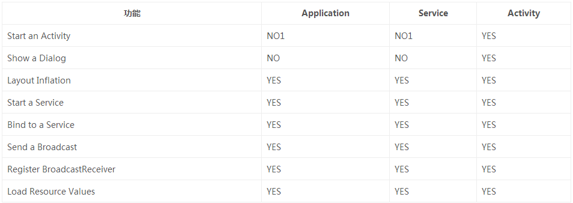
其中： NO1表示 Application 和 Service 可以启动一个 Activity，不过需要创建一个新的 task 任务队列。而对于 Dialog 而言，只有在 Activity 中才能创建
2、匿名内部类
android开发经常会继承实现Activity/Fragment/View，此时如果你使用了匿名类，并被异步线程持有了，那要小心了，如果没有任何措施这样一定会导致泄露
public class MainActivity extends Activity {
...
Runnable ref1 = new MyRunable();
Runnable ref2 = new Runnable() {
@Override
public void run() {
}
};
...
}
ref1和ref2的区别是，ref2使用了匿名内部类。我们来看看运行时这两个引用的内存：
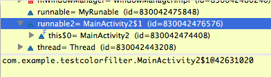
可以看到，ref1没什么特别的。
但ref2这个匿名类的实现对象里面多了一个引用：
this$0这个引用指向MainActivity.this，也就是说当前的MainActivity实例会被ref2持有，如果将这个引用再传入一个异步线程，此线程和此Acitivity生命周期不一致的时候，就造成了Activity的泄露。
- Handler 造成的内存泄漏
Handler 的使用造成的内存泄漏问题应该说是最为常见了，很多时候我们为了避免 ANR 而不在主线程进行耗时操作，在处理网络任务或者封装一些请求回调等api都借助Handler来处理，但 Handler 不是万能的，对于 Handler 的使用代码编写一不规范即有可能造成内存泄漏。另外，我们知道 Handler、Message 和 MessageQueue 都是相互关联在一起的，万一 Handler 发送的 Message 尚未被处理，则该 Message 及发送它的 Handler 对象将被线程 MessageQueue 一直持有。 由于 Handler 属于 TLS(Thread Local Storage) 变量, 生命周期和 Activity 是不一致的。因此这种实现方式一般很难保证跟 View 或者 Activity 的生命周期保持一致，故很容易导致无法正确释放。
举个例子：
public class SampleActivity extends Activity {
private final Handler mLeakyHandler = new Handler() {
@Override
public void handleMessage(Message msg) {
// ...
}
}
@Override
protected void onCreate(Bundle savedInstanceState) {
super.onCreate(savedInstanceState);
// Post a message and delay its execution for 10 minutes.
mLeakyHandler.postDelayed(new Runnable() {
@Override
public void run() { /* ... */ }
}, 1000 * 60 * 10);
// Go back to the previous Activity.
finish();
}
}
在该 SampleActivity 中声明了一个延迟10分钟执行的消息 Message，mLeakyHandler 将其 push 进了消息队列 MessageQueue 里。当该 Activity 被 finish() 掉时，延迟执行任务的 Message 还会继续存在于主线程中，它持有该 Activity 的 Handler 引用，所以此时 finish() 掉的 Activity 就不会被回收了从而造成内存泄漏（因 Handler 为非静态内部类，它会持有外部类的引用，在这里就是指 SampleActivity）。
修复方法：在 Activity 中避免使用非静态内部类，比如上面我们将 Handler 声明为静态的，则其存活期跟 Activity 的生命周期就无关了。同时通过弱引用的方式引入 Activity，避免直接将 Activity 作为 context 传进去，见下面代码：
public class SampleActivity extends Activity {
/**
* Instances of static inner classes do not hold an implicit
* reference to their outer class.
*/
private static class MyHandler extends Handler {
private final WeakReference<SampleActivity> mActivity;
public MyHandler(SampleActivity activity) {
mActivity = new WeakReference<SampleActivity>(activity);
}
@Override
public void handleMessage(Message msg) {
SampleActivity activity = mActivity.get();
if (activity != null) {
// ...
}
}
}
private final MyHandler mHandler = new MyHandler(this);
/**
* Instances of anonymous classes do not hold an implicit
* reference to their outer class when they are "static".
*/
private static final Runnable sRunnable = new Runnable() {
@Override
public void run() { /* ... */ }
};
@Override
protected void onCreate(Bundle savedInstanceState) {
super.onCreate(savedInstanceState);
// Post a message and delay its execution for 10 minutes.
mHandler.postDelayed(sRunnable, 1000 * 60 * 10);
// Go back to the previous Activity.
finish();
}
}
综述，即推荐使用静态内部类 + WeakReference 这种方式。每次使用前注意判空。
前面提到了 WeakReference，所以这里就简单的说一下 Java 对象的几种引用类型。
Java对引用的分类有 Strong reference, SoftReference, WeakReference, PhatomReference 四种。

在Android应用的开发中，为了防止内存溢出，在处理一些占用内存大而且声明周期较长的对象时候，可以尽量应用软引用和弱引用技术。
软/弱引用可以和一个引用队列（ReferenceQueue）联合使用，如果软引用所引用的对象被垃圾回收器回收，Java虚拟机就会把这个软引用加入到与之关联的引用队列中。利用这个队列可以得知被回收的软/弱引用的对象列表，从而为缓冲器清除已失效的软/弱引用。
假设我们的应用会用到大量的默认图片，比如应用中有默认的头像，默认游戏图标等等，这些图片很多地方会用到。如果每次都去读取图片，由于读取文件需要硬件操作，速度较慢，会导致性能较低。所以我们考虑将图片缓存起来，需要的时候直接从内存中读取。但是，由于图片占用内存空间比较大，缓存很多图片需要很多的内存，就可能比较容易发生OutOfMemory异常。这时，我们可以考虑使用软/弱引用技术来避免这个问题发生。以下就是高速缓冲器的雏形：
首先定义一个HashMap，保存软引用对象。
private Map <String, SoftReference<Bitmap>> imageCache = new HashMap <String, SoftReference<Bitmap>> ();
再来定义一个方法，保存Bitmap的软引用到HashMap。
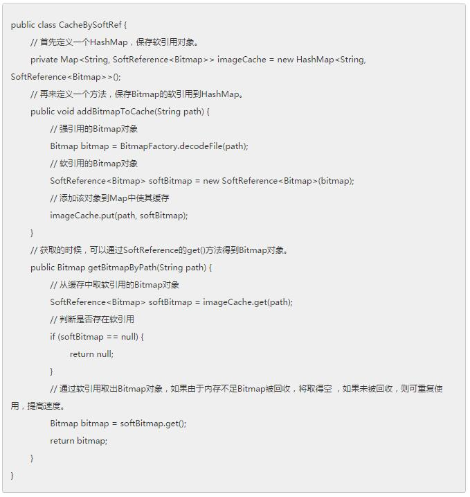
使用软引用以后，在OutOfMemory异常发生之前，这些缓存的图片资源的内存空间可以被释放掉的，从而避免内存达到上限，避免Crash发生。
如果只是想避免OutOfMemory异常的发生，则可以使用软引用。如果对于应用的性能更在意，想尽快回收一些占用内存比较大的对象，则可以使用弱引用。
另外可以根据对象是否经常使用来判断选择软引用还是弱引用。如果该对象可能会经常使用的，就尽量用软引用。如果该对象不被使用的可能性更大些，就可以用弱引用。
ok，继续回到主题。前面所说的，创建一个静态Handler内部类，然后对 Handler 持有的对象使用弱引用，这样在回收时也可以回收 Handler 持有的对象，但是这样做虽然避免了 Activity 泄漏，不过 Looper 线程的消息队列中还是可能会有待处理的消息，所以我们在 Activity 的 Destroy 时或者 Stop 时应该移除消息队列 MessageQueue 中的消息。
下面几个方法都可以移除 Message：
public final void removeCallbacks(Runnable r);
public final void removeCallbacks(Runnable r, Object token);
public final void removeCallbacksAndMessages(Object token);
public final void removeMessages(int what);
public final void removeMessages(int what, Object object);
- 尽量避免使用 static 成员变量
如果成员变量被声明为 static，那我们都知道其生命周期将与整个app进程生命周期一样。
这会导致一系列问题，如果你的app进程设计上是长驻内存的，那即使app切到后台，这部分内存也不会被释放。按照现在手机app内存管理机制，占内存较大的后台进程将优先回收，因为如果此app做过进程互保保活，那会造成app在后台频繁重启。当手机安装了你参与开发的app以后一夜时间手机被消耗空了电量、流量，你的app不得不被用户卸载或者静默。
这里修复的方法是：
a.不要在类初始时初始化静态成员。可以考虑lazy初始化。
b.架构设计上要思考是否真的有必要这样做，尽量避免。如果架构需要这么设计，那么此对象的生命周期你有责任管理起来。
- 避免 override finalize()
1、finalize 方法被执行的时间不确定，不能依赖与它来释放紧缺的资源。时间不确定的原因是： 虚拟机调用GC的时间不确定
Finalize daemon线程被调度到的时间不确定
2、finalize 方法只会被执行一次，即使对象被复活，如果已经执行过了 finalize 方法，再次被 GC 时也不会再执行了，原因是：
含有 finalize 方法的 object 是在 new 的时候由虚拟机生成了一个 finalize reference 在来引用到该Object的，而在 finalize 方法执行的时候，该 object 所对应的 finalize Reference 会被释放掉，即使在这个时候把该 object 复活(即用强引用引用住该 object )，再第二次被 GC 的时候由于没有了 finalize reference 与之对应，所以 finalize 方法不会再执行。
3、含有Finalize方法的object需要至少经过两轮GC才有可能被释放。
详情见这里 深入分析过dalvik的代码
- 资源未关闭造成的内存泄漏
对于使用了BraodcastReceiver，ContentObserver，File，游标 Cursor，Stream，Bitmap等资源的使用，应该在Activity销毁时及时关闭或者注销，否则这些资源将不会被回收，造成内存泄漏。
- 一些不良代码造成的内存压力
有些代码并不造成内存泄露，但是它们，或是对没使用的内存没进行有效及时的释放，或是没有有效的利用已有的对象而是频繁的申请新内存。
比如：
- Bitmap 没调用 recycle()方法，对于 Bitmap 对象在不使用时,我们应该先调用 recycle() 释放内存，然后才它设置为 null. 因为加载 Bitmap 对象的内存空间，一部分是 java 的，一部分 C 的（因为 Bitmap 分配的底层是通过 JNI 调用的 )。 而这个 recyle() 就是针对 C 部分的内存释放。
- 构造 Adapter 时，没有使用缓存的 convertView ,每次都在创建新的 converView。这里推荐使用 ViewHolder。
工具分析
Java 内存泄漏的分析工具有很多，但众所周知的要数 MAT(Memory Analysis Tools) 和 YourKit 了。由于篇幅问题，我这里就只对 MAT 的使用做一下介绍。--> MAT 的安装
- MAT分析heap的总内存占用大小来初步判断是否存在泄露
打开 DDMS 工具，在左边 Devices 视图页面选中“Update Heap”图标，然后在右边切换到 Heap 视图，点击 Heap 视图中的“Cause GC”按钮，到此为止需检测的进程就可以被监视。
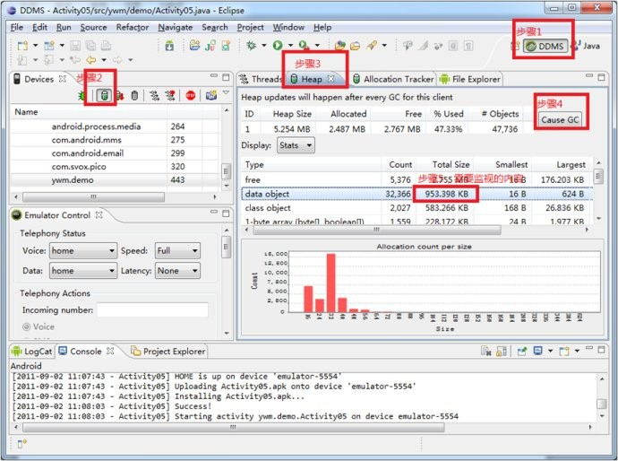
Heap视图中部有一个Type叫做data object，即数据对象，也就是我们的程序中大量存在的类类型的对象。在data object一行中有一列是“Total Size”，其值就是当前进程中所有Java数据对象的内存总量，一般情况下，这个值的大小决定了是否会有内存泄漏。可以这样判断：
进入某应用，不断的操作该应用，同时注意观察data object的Total Size值，正常情况下Total Size值都会稳定在一个有限的范围内，也就是说由于程序中的的代码良好，没有造成对象不被垃圾回收的情况。
所以说虽然我们不断的操作会不断的生成很多对象，而在虚拟机不断的进行GC的过程中，这些对象都被回收了，内存占用量会会落到一个稳定的水平；反之如果代码中存在没有释放对象引用的情况，则data object的Total Size值在每次GC后不会有明显的回落。随着操作次数的增多Total Size的值会越来越大，直到到达一个上限后导致进程被杀掉。
- MAT分析hprof来定位内存泄露的原因所在
这是出现内存泄露后使用MAT进行问题定位的有效手段。
A)Dump出内存泄露当时的内存镜像hprof，分析怀疑泄露的类：
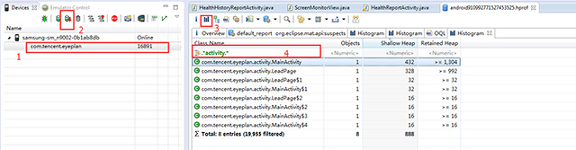
B)分析持有此类对象引用的外部对象
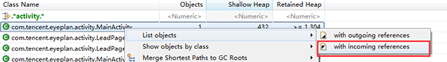
C)分析这些持有引用的对象的GC路径
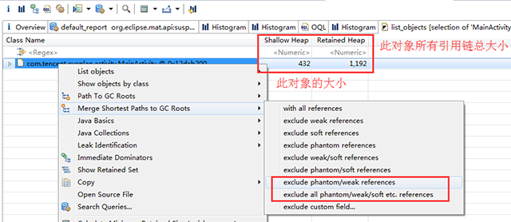
D)逐个分析每个对象的GC路径是否正常
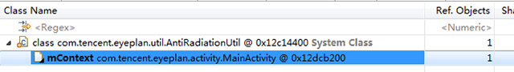
从这个路径可以看出是一个antiRadiationUtil工具类对象持有了MainActivity的引用导致MainActivity无法释放。此时就要进入代码分析此时antiRadiationUtil的引用持有是否合理（如果antiRadiationUtil持有了MainActivity的context导致节目退出后MainActivity无法销毁，那一般都属于内存泄露了）。
- MAT对比操作前后的hprof来定位内存泄露的根因所在
为查找内存泄漏，通常需要两个 Dump结果作对比，打开 Navigator History面板，将两个表的 Histogram结果都添加到 Compare Basket中去
A） 第一个HPROF 文件(usingFile > Open Heap Dump ).
B）打开Histogram view.
C）在NavigationHistory view里 (如果看不到就从Window >show view>MAT- Navigation History ), 右击histogram然后选择Add to Compare Basket .
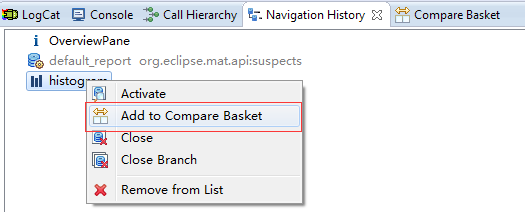
D）打开第二个HPROF 文件然后重做步骤2和3.
E）切换到Compare Basket view, 然后点击Compare the Results (视图右上角的红色”!”图标)。
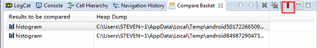
F）分析对比结果
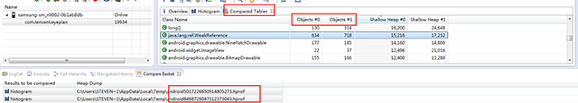
可以看出两个hprof的数据对象对比结果。
通过这种方式可以快速定位到操作前后所持有的对象增量，从而进一步定位出当前操作导致内存泄露的具体原因是泄露了什么数据对象。
注意：
如果是用 MAT Eclipse 插件获取的 Dump文件，不需要经过转换则可在MAT中打开，Adt会自动进行转换。
而手机SDk Dump 出的文件要经过转换才能被 MAT识别，Android SDK提供了这个工具 hprof-conv (位于 sdk/tools下)
首先，要通过控制台进入到你的 android sdk tools 目录下执行以下命令： ./hprof-conv xxx-a.hprof xxx-b.hprof
例如 hprof-conv input.hprof out.hprof
此时才能将out.hprof放在eclipse的MAT中打开。
Ok，下面将给大家介绍一个屌炸天的工具 -- LeakCanary 。
使用 LeakCanary 检测 Android 的内存泄漏
什么是 LeakCanary 呢？为什么选择它来检测 Android 的内存泄漏呢？
别急，让我来慢慢告诉大家！
LeakCanary 是国外一位大神 Pierre-Yves Ricau 开发的一个用于检测内存泄露的开源类库。一般情况下，在对战内存泄露中，我们都会经过以下几个关键步骤：
1、了解 OutOfMemoryError 情况。
2、重现问题。
3、在发生内存泄露的时候，把内存 Dump 出来。
4、在发生内存泄露的时候，把内存 Dump 出来。
5、计算这个对象到 GC roots 的最短强引用路径。
6、确定引用路径中的哪个引用是不该有的，然后修复问题。
很复杂对吧？
如果有一个类库能在发生 OOM 之前把这些事情全部都搞定，然后你只要修复这些问题就好了。LeakCanary 做的就是这件事情。你可以在 debug 包中轻松检测内存泄露。
一起来看这个例子（摘自 LeakCanary 中文使用说明，下面会附上所有的参考文档链接）：
class Cat {
}
class Box {
Cat hiddenCat;
}
class Docker {
// 静态变量，将不会被回收，除非加载 Docker 类的 ClassLoader 被回收。
static Box container;
}
// ...
Box box = new Box();
// 薛定谔之猫
Cat schrodingerCat = new Cat();
box.hiddenCat = schrodingerCat;
Docker.container = box;
当发现有内存泄露的时候，你会看到一个很漂亮的 leak trace 报告:
- GC ROOT static Docker.container
- references Box.hiddenCat
- leaks Cat instance
我们知道，你很忙，每天都有一大堆需求。所以我们把这个事情弄得很简单，你只需要添加一行代码就行了。然后 LeakCanary 就会自动侦测 activity 的内存泄露了。
public class ExampleApplication extends Application {
@Override public void onCreate() {
super.onCreate();
LeakCanary.install(this);
}
}
然后你会在通知栏看到这样很漂亮的一个界面:
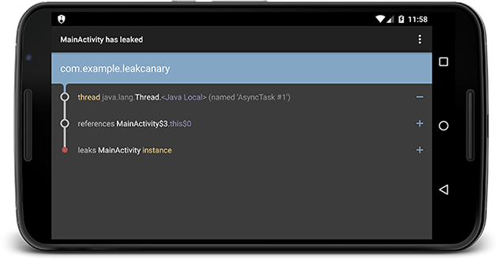
以很直白的方式将内存泄露展现在我们的面前。
- Demo
一个非常简单的 LeakCanary demo: 一个非常简单的 LeakCanary demo
- 接入
在 build.gradle 中加入引用，不同的编译使用不同的引用：
dependencies {
debugCompile 'com.squareup.leakcanary:leakcanary-android:1.3'
releaseCompile 'com.squareup.leakcanary:leakcanary-android-no-op:1.3'
}
* 如何使用
使用 RefWatcher 监控那些本该被回收的对象。
RefWatcher refWatcher = {...};
// 监控 refWatcher.watch(schrodingerCat);
`LeakCanary.install()`会返回一个预定义的`RefWatcher`，同时也会启用一个`ActivityRefWatcher`，用于自动监控调用`Activity.onDestroy(` 之后泄露的`activity`。
在Application中进行配置 ：
public class ExampleApplication extends Application {
public static RefWatcher getRefWatcher(Context context) {
ExampleApplication application = (ExampleApplication) context.getApplicationContext();
return application.refWatcher;
}
private RefWatcher refWatcher;
@Override public void onCreate() {
super.onCreate();
refWatcher = LeakCanary.install(this);
}
}
使用 RefWatcher 监控 Fragment：
public abstract class BaseFragment extends Fragment {
@Override public void onDestroy() {
super.onDestroy();
RefWatcher refWatcher = ExampleApplication.getRefWatcher(getActivity());
refWatcher.watch(this);
}
}
使用 RefWatcher 监控 Activity：
public class MainActivity extends AppCompatActivity {
......
@Override
protected void onCreate(Bundle savedInstanceState) {
super.onCreate(savedInstanceState);
setContentView(R.layout.activity_main);
//在自己的应用初始Activity中加入如下两行代码
RefWatcher refWatcher = ExampleApplication.getRefWatcher(this);
refWatcher.watch(this);
textView = (TextView) findViewById(R.id.tv);
textView.setOnClickListener(new View.OnClickListener() {
@Override
public void onClick(View v) {
startAsyncTask();
}
});
}
private void async() {
startAsyncTask();
}
private void startAsyncTask() {
// This async task is an anonymous class and
// therefore has a hidden reference to the outer
// class MainActivity. If the activity gets destroyed
// before the task finishes (e.g. rotation),
// the activity instance will leak.
new AsyncTask<Void, Void, Void>() {
@Override
protected Void doInBackground(Void... params) {
// Do some slow work in background
SystemClock.sleep(20000);
return null;
}
}.execute();
}
} ```
- 工作机制
- RefWatcher.watch() 创建一个 KeyedWeakReference 到要被监控的对象。
- 然后在后台线程检查引用是否被清除，如果没有，调用GC。
- 如果引用还是未被清除，把 heap 内存 dump 到 APP 对应的文件系统中的一个 .hprof 文件中。
- 在另外一个进程中的 HeapAnalyzerService 有一个 HeapAnalyzer 使用HAHA 解析这个文件。
- 得益于唯一的 reference key, HeapAnalyzer 找到 KeyedWeakReference，定位内存泄露。
- HeapAnalyzer 计算 到 GC roots 的最短强引用路径，并确定是否是泄露。如果是的话，建立导致泄露的引用链。
- 引用链传递到 APP 进程中的 DisplayLeakService， 并以通知的形式展示出来。
ok,这里就不再深入了，想要了解更多就到 作者 github 主页 这去哈。
总结
- 对 Activity 等组件的引用应该控制在 Activity 的生命周期之内； 如果不能就考虑使用 getApplicationContext 或者 getApplication，以避免 Activity 被外部长生命周期的对象引用而泄露。
- 尽量不要在静态变量或者静态内部类中使用非静态外部成员变量（包括context )，即使要使用，也要考虑适时把外部成员变量置空；也可以在内部类中使用弱引用来引用外部类的变量。
- 对于生命周期比Activity长的内部类对象，并且内部类中使用了外部类的成员变量，可以这样做避免内存泄漏：
- 将内部类改为静态内部类
- 静态内部类中使用弱引用来引用外部类的成员变量
- Handler 的持有的引用对象最好使用弱引用，资源释放时也可以清空 Handler 里面的消息。比如在 Activity onStop 或者 onDestroy 的时候，取消掉该 Handler 对象的 Message和 Runnable.
- 在 Java 的实现过程中，也要考虑其对象释放，最好的方法是在不使用某对象时，显式地将此对象赋值为 null，比如使用完Bitmap 后先调用 recycle()，再赋为null,清空对图片等资源有直接引用或者间接引用的数组（使用 array.clear() ; array = null）等，最好遵循谁创建谁释放的原则。
- 正确关闭资源，对于使用了BraodcastReceiver，ContentObserver，File，游标 Cursor，Stream，Bitmap等资源的使用，应该在Activity销毁时及时关闭或者注销。
- 保持对对象生命周期的敏感，特别注意单例、静态对象、全局性集合等的生命周期。
以上部分图片、实例代码和文段都摘自或参考以下文章 ：
支付宝：
Android怎样coding避免内存泄露
支付宝钱包Android内存治理
IBM ：
Android Design Patterns ：
How to Leak a Context: Handlers & Inner Classes
伯乐在线团队：
我厂同学 ：
腾讯bugly ：
内存泄露从入门到精通三部曲之基础知识篇
内存泄露从入门到精通三部曲之排查方法篇
内存泄露从入门到精通三部曲之常见原因与用户实践
LeakCanary :
LeakCanary 中文使用说明
LeakCanary: 让内存泄露无所遁形
https://github.com/square/leakcanary